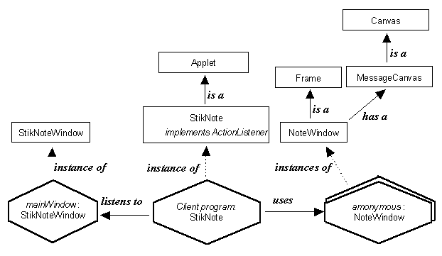

3.1 The StikNote application, visual appearance and STD design
3.1 The StikNote application, visual appearance and STD design
An instance diagram illustrating the overall design of this application is presented in Figure 3.3.

Figure 3.3 Instance diagram for the StikNote application.
The diagram shows that the client program, in the middle, is supplied by an instance of the StikNote class which extends the Applet class. It also implements the ActionListener interface in order for it to be able to listen to events generated by the mainWindow, shown on the left, which is an instance of the StikNoteWindow class. In response to these events the client program will create anonymous instances of the NoteWindow class, shown on the right, which extends the Frame class. By extending the Frame class NoteWindow instances are able to exist on the desktop with an independent top-level window, as illustrated in Figure 3.1.
In order to be able to display the multi-line messages each NoteWindow has an encapsulated instance of the MessageCanvas class, which is an extension of the Canvas class. This class will be reused by other applications throughout the book and so, unlike the StikNote, StikNoteWindow and NoteWindow classes, it is not contained within the StikNote package of classes.
The StikNoteWindow and NoteWindow classes can be considered as the presentation parts of this application, providing the user with interactive components and presenting information and feedback to them. The StikNote class can be though of as the translation part, mediating messages between the two presentation parts. In this artifact there is no application part. However if the messages were destined to be sent somewhere else, for example logged to a file, then this would provide an application component for the artifact.
3.1 The StikNote application, visual appearance and STD design